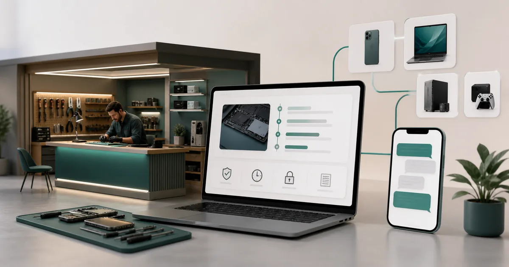

Site custom vs WordPress în 2026: avantaje și riscuri
WordPress accelerează proiectele standard și oferă ecosistem, iar dezvoltarea custom oferă control asupra fluxurilor și codului când cerințele justifică investiția.
Citește articolulGhiduri clare despre SEO, promovare online, website-uri și măsurarea rezultatelor. Fără jargon inutil, cu exemple și pași aplicabili.
Scrie întrebarea, serviciul sau obiectivul. Sugestiile apar imediat, iar biblioteca de articole se filtrează numai după ce apeși săgeata sau Enter.
WordPress accelerează proiectele standard și oferă ecosistem, iar dezvoltarea custom oferă control asupra fluxurilor și codului când cerințele justifică investiția.
Citește articolul
Cum construiești un website pentru cabinete și firme de servicii juridice în Hunedoara care transformă căutările în programări, cu dovezi, formulare, tracking și follow-up.
Citește articolul
Vezi cum se proiectează un website în Bacău pentru firme de securitate, cu UX mobil, dovezi, conținut și trasee clare către cereri de ofertă.
Citește articolul
Ghid de SEO local în Bistrița pentru ateliere și producători la comandă: pagini utile, Google Maps, recenzii, date coerente, conținut și măsurarea cereri de ofertă.
Citește articolul
Plan de redesign website în Mediaș pentru clinici medicale: audit, conținut, UX, redirecturi, măsurare și lansare fără pierderea vizibilității organice.
Citește articolul
Strategie de promovare online în Pitești pentru service-uri de electronice și IT: ofertă, landing page, canale, tracking, buget și optimizare pentru apeluri calificate.
Citește articolul
Plan practic de creare website în Oradea pentru cabinete stomatologice: structură, conținut, funcții, SEO local, tracking și pași pentru programări.
Citește articolul
Află ce influențează costul unui site de prezentare în București, ce include oferta și cum separi dezvoltarea, conținutul, SEO și promovarea.
Citește articolulGhid complet despre costul unui magazin online în București: platformă, produse, plăți, curier, stoc, tracking, mentenanță și buget de promovare.
Citește articolul
Cum împarți bugetul între website, conținut, SEO și reclame în Lugoj, pentru agenții imobiliare, fără să investești înainte de validarea traseului comercial.
Citește articolulDiscutăm obiectivul, alegem pașii potriviți și stabilim ce merită măsurat.
Hai să construim planul →